Twenty-seven loop-ready pixel-art clips. Right click to save, or drag straight into a tweet. Locked palette, nearest-neighbor, opaque (composite cleanly on light or dark timelines). All under the 15MB limit.
 chop-tree.gifthe wanderer fells an ashen oak, chips flying · woodcutting
chop-tree.gifthe wanderer fells an ashen oak, chips flying · woodcutting mine-rock.gifpickaxe on an ore vein, gold sparks · mining
mine-rock.gifpickaxe on an ore vein, gold sparks · mining mob-clash.giftrading blows with a Drift Husk, hit-flash + motes · combat
mob-clash.giftrading blows with a Drift Husk, hit-flash + motes · combat stalker-hunt.gifa Drift Stalker stalks, then lunges at you · mob
stalker-hunt.gifa Drift Stalker stalks, then lunges at you · mob colossus-slam.gifthe Drift Colossus advances and SLAMS · boss
colossus-slam.gifthe Drift Colossus advances and SLAMS · boss mob-parade.gifHusk, Stalker and the Colossus advance · bestiary
mob-parade.gifHusk, Stalker and the Colossus advance · bestiary avatars-showcase.gifthe four premium avatars on the march · cosmetics
avatars-showcase.gifthe four premium avatars on the march · cosmetics victory.gifVICTORY plate shimmering over the survivor · win card
victory.gifVICTORY plate shimmering over the survivor · win card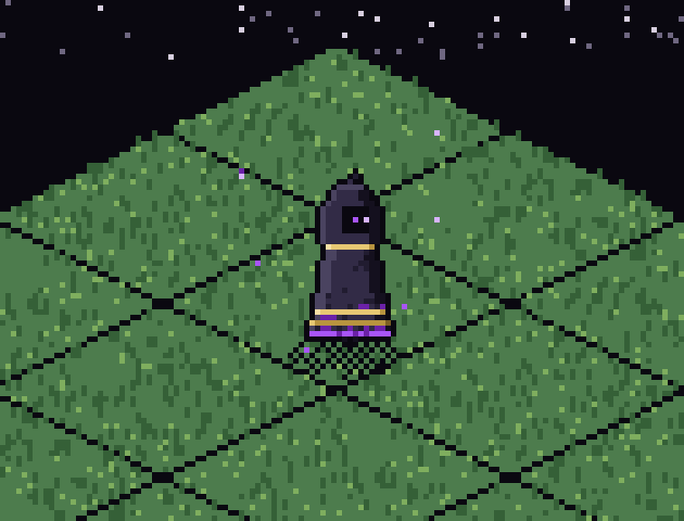
ashfall-dye.gifthe wanderer marches in the Ashfall cloak — gilt trim, drift hem · S01 battle pass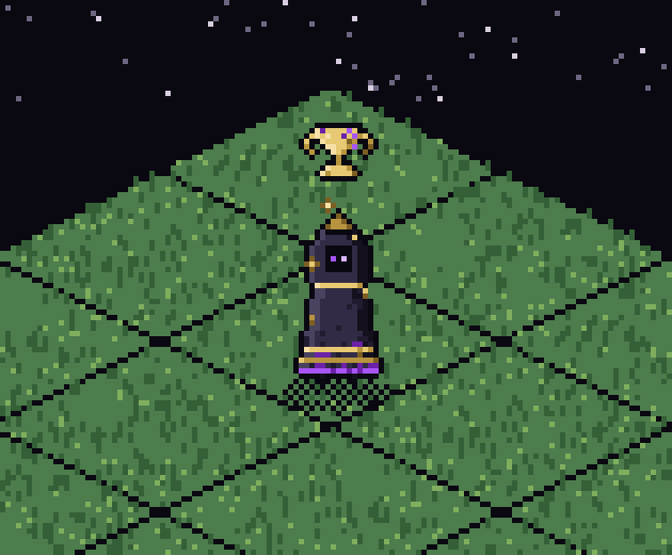
tarnished-chalice.gifthe rot-gilded chalice hovers, its lid orbiting the head · S01 prestige aura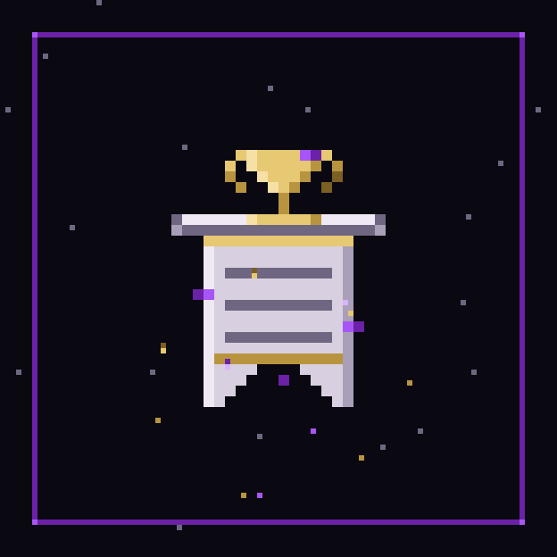
ashfall-pass.gifthe seasonal-ledger sigil, shimmering with drift flecks · S01 reveal cardwanderer-turnaround.gifthe hooded wanderer turns through every facing · turnaround
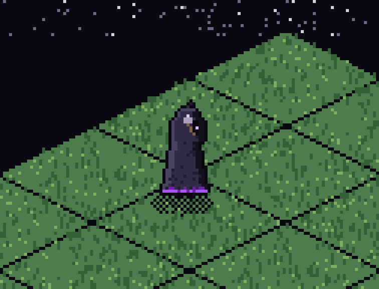
wanderer-swing.gifa gathering swing, sparks on the strike · action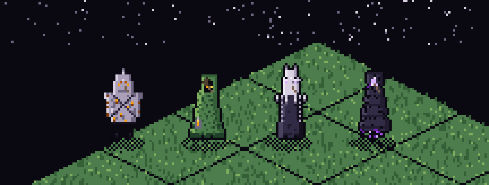
avatars-swing.gifthe four premium avatars strike, each its own arm · cosmeticscorruption-halo.gifthe Drift halo pulses, motes spiralling inward · prestige aura
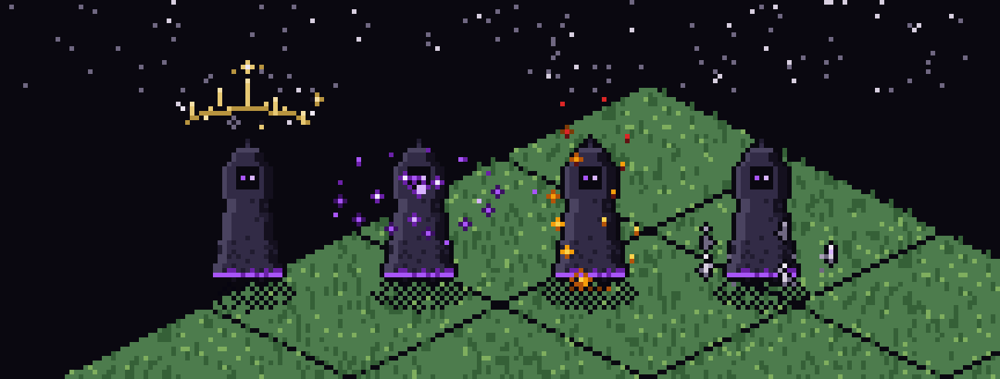
aura-parade.gifall four prestige auras — crown, halo, cinder, wisp · cosmetics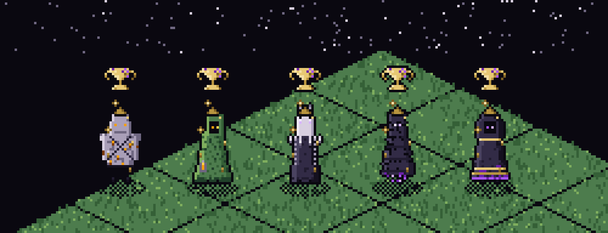
chalice-anyone.gifthe tarnished chalice crowns any character · S01 prestige aura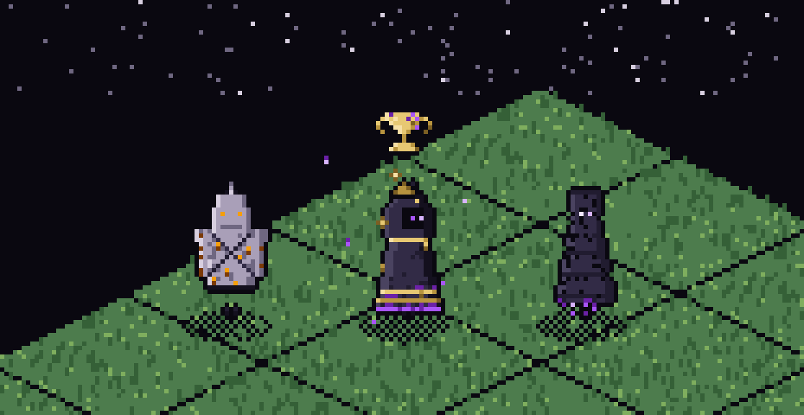
ashfall-march.gifthe Ashfall squad on the march · S01 battle passdye-options.gifthe cloak dye cycles its colorways — one rig, many looks · S01 dye system
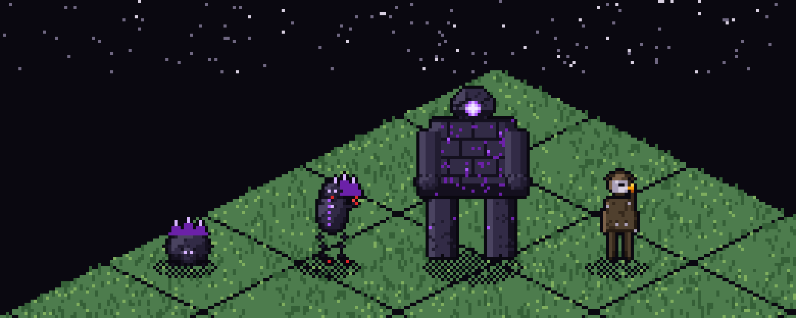
bestiary.gifHusk, Stalker, the Colossus and Raider at rest · bestiary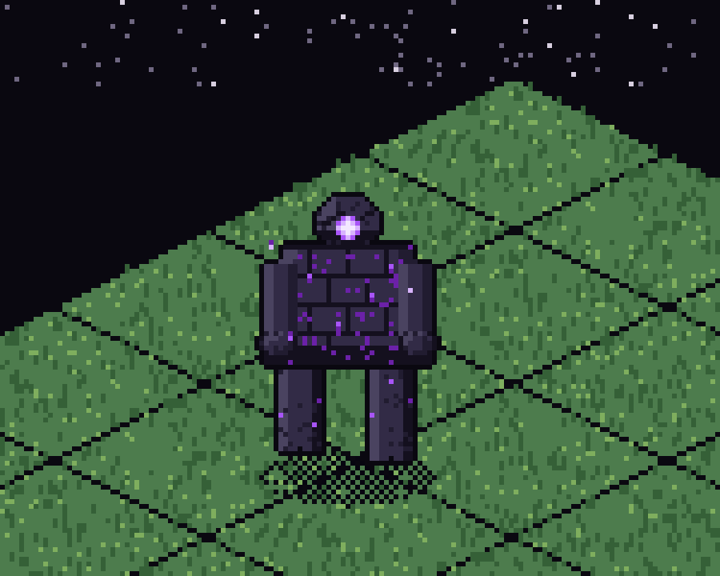
colossus-walk.gifthe Drift Colossus advances, eye alight · boss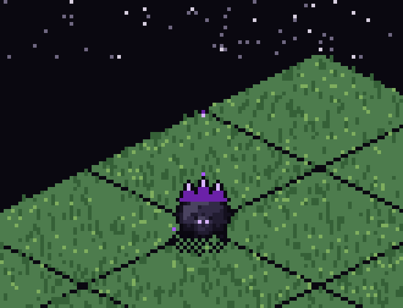
husk-skitter.gifa Drift Husk skitters across the grass · mob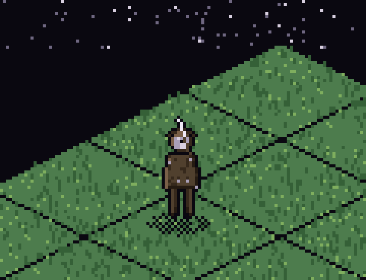
raider-slash.gifa Caravan Raider slashes, ember on the edge · mob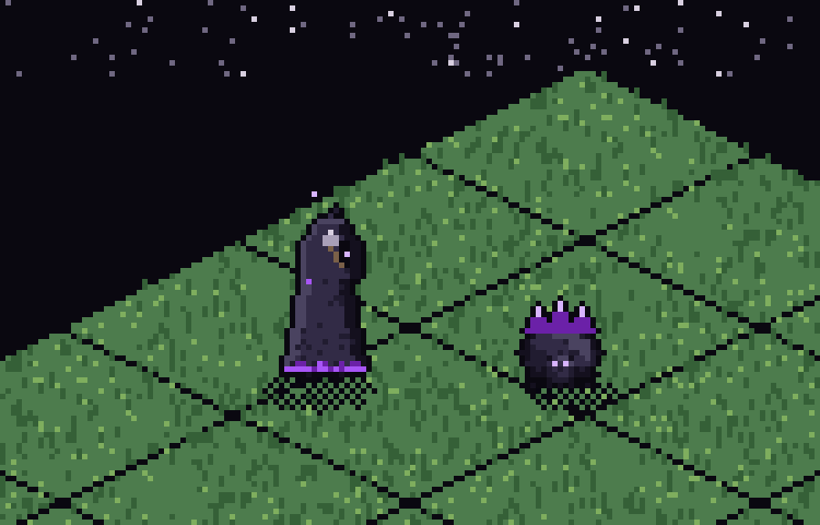
wanderer-vs-husk.gifthe wanderer trades a blow with a Husk · combat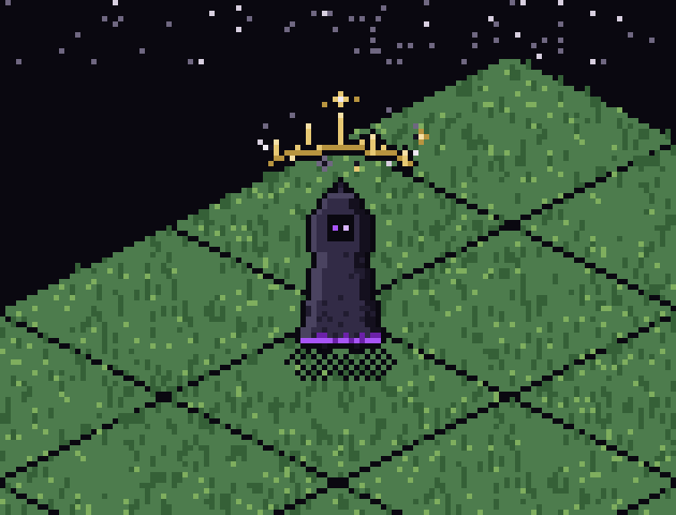
ashen-crown.gifthe Ashen Crown circles ash flecks over the head · prestige aura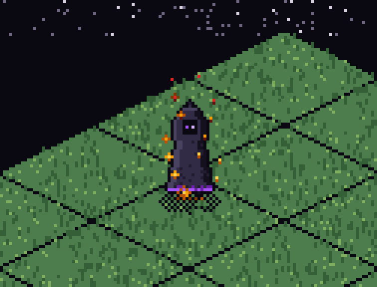
ember-cinder.gifEmber Cinder sparks rise and cool to blood-ash · prestige aura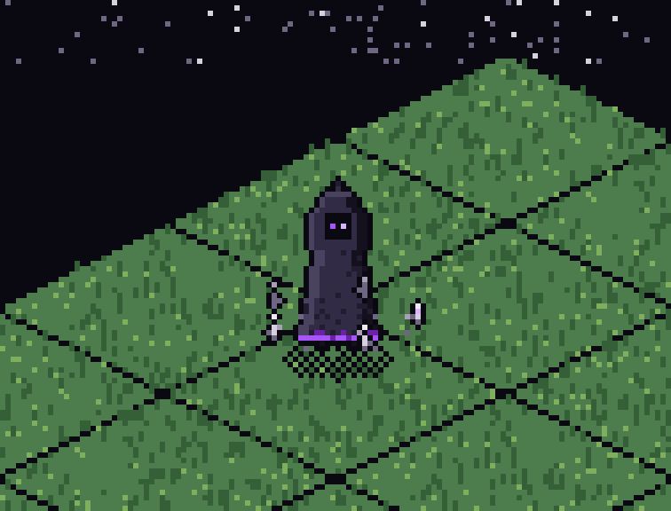
bonewisp.gifBonewisp wisps orbit low and cold · prestige aura